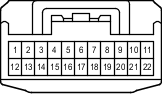

Наименование
Разъем распределительного блока
Код
A69
Каталожный номер
90980-12372
Цвет
Белый
Технические характеристики
Жгуты проводов для ремонта

Расположение
Расположение деталей в моторном отсеке (для моделей с левосторонним рулевым управлением и 1GR-FE) 1
Расположение деталей в моторном отсеке (для моделей с левосторонним рулевым управлением и 1KD-FTV) 2
Расположение деталей в моторном отсеке (для моделей с левосторонним рулевым управлением и двигателем 2TR-FE) 1
Расположение деталей в моторном отсеке (для моделей с левосторонним рулевым управлением и двигателем 5L-E) 1
Расположение деталей в моторном отсеке (для моделей с правосторонним рулевым управлением и двигателем 1GR-FE) 1
Расположение деталей в моторном отсеке (для моделей с правосторонним рулевым управлением и 1KD-FTV) 2
Расположение деталей в моторном отсеке (для моделей с правосторонним рулевым управлением и двигателем 2TR-FE) 1
Расположение деталей в моторном отсеке (для моделей с правосторонним рулевым управлением и двигателем 5L-E) 1
Система
Система адаптивного переднего освещения
Система кондиционирования
Вентилятор конденсатора
Система круиз-контроля (для моделей с 1KD-FTV)
Индикатор ECT и A/T (для моделей с 1KD-FTV)
Система управления двигателем (для моделей с 1KD-FTV)
Противообледенитель ветрового стекла
Очистители фар
Силовая розетка (220 В)
Обогреватель заднего стекла